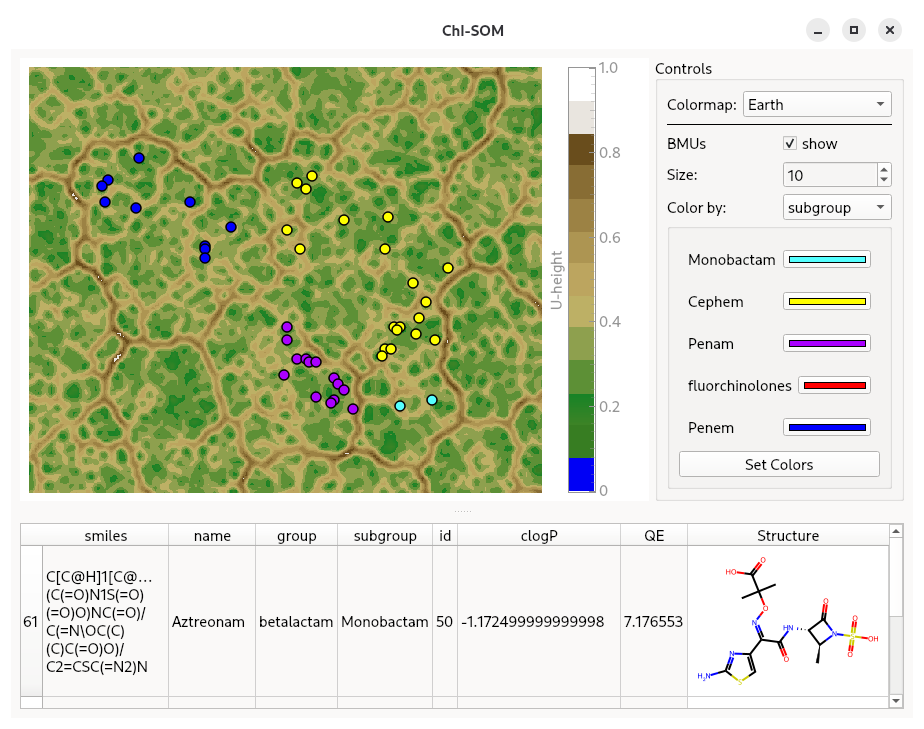

ᵡ-SOM
ChemInformatics SOM Toolkit
ᵡ-SOM is a high-performance framework for training emergent self-organizing maps (ESOMs) with a specific focus on cheminformatics; including on-disc, low-latency data storage and a GUI.
It was specifically developed for visualising the chemical space of million-scale molecular datasets and for interactive exploration.

Installation
Currently, ChI-SOM is only available for Linux, and Windows using WSL2.
It can be installed directly from PyPI
pip install chi-som
For the CUDA compute backend, numba-cuda is required.
On systems running CUDA, ChI-SOM can be installed with CUDA support via
pip install chi-som[cu12]
for CUDA13 or
pip install chi-som[cu13]
for CUDA12
Please refer to the numba-cuda documentation for more complex setups.
CAVEAT
This software may be considered to be in beta stage. While the user-facing API is expected to remain stable up to a 2.0 release, the internal API might change at any release and can not be considered stable.
Usage example
import numpy as np
from chisom import Som, start_chisom_viewer
from chisom.utils import decay_linear, lattice_size
data = np.random.random((600, 400))
# Set up with ESOM rules
n_datapoints, n_features = data.shape
rows, columns = lattice_size(n_datapoints)
SIGMA = rows // 2
# Create a SOM object
# The high and low parameters should be chosen according to the dataset values
som = Som(
rows,
columns,
n_features,
low=data.min(),
high=data.max(),
)
N_EPOCHS = 30
# The training loop
for epoch in range(N_EPOCHS):
# Calculate the current sigma and alpha values using decay functions
current_sigma = decay_linear(epoch, SIGMA, total_iterations=N_EPOCHS)
current_alpha = decay_linear(epoch, 0.8, total_iterations=N_EPOCHS)
# Train one epoch
som.train(data, epoch, current_sigma, current_alpha)
# Calculate the U-Matrix
umx = som.get_umatrix()
# Predict the best matching units and quantization errors for all data points
bmus, qe = som.predict(data)
# Using the GUI needs information to overlay on the datapoints
dataset = pd.from_dict(
{"Type:": ["A"] * len(data)}
)
# Start the GUI
start_chisom_viewer(umx, bmus, dataset)
Development Setup
ChI-SOM is developed, built, and packaged using Astral uv
To set up a development environment initalize with
uv sync
To build run
uv build
Meta
Authors: Johannes Kaminski, Oliver Koch @ AG Koch
Contact: j.kaminski[at]uni-muenster.de
ChI-SOM is distributed under the LGPLv3. See LICENCES for more information.